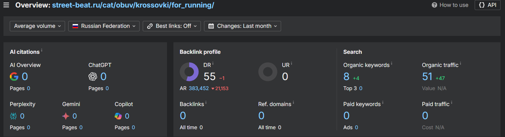

Анализ низких позиций страницы категории беговых кроссовок street-beat.ru
Несмотря на неплохую общую оптимизацию страницы street-beat.ru/cat/krossovki/for_running/ и известность бренда по запросам "беговые кроссовки" и "купить кроссовки для бега", страница ранжируется за пределами топ-20 в Яндексе и не входит в топ-40 в Google.
Задача: Определить причину таких низких позиций и описать, что нужно сделать для улучшения ранжирования страницы по данным запросам.
Описание проблемы
Проведенный аудит ссылочного профиля сайта в Ahrefs выявил две взаимосвязанные проблемы, ведущие к низким позициям страницы.
Первая проблема — полное отсутствие входящих ссылок, как внутренних, так и внешних. Данные Ahrefs по обратным ссылкам (Backlinks) подтверждают, что на анализируемую страницу не ссылается ни один внешний домен. Это лишает страницу внешнего авторитета, который является ключевым фактором ранжирования.

Внутренняя ситуация: страница практически исключена из основной навигации сайта. Она доступна из подвала в общем списке «Магазины — Кроссовки», в то время как релевантные запросы пользователей обслуживаются другими, более приоритетными страницами — «Мужские кроссовки для бега», «Женские кроссовки для бега» и «Детские кроссовки для бега». Эти страницы имеют глубокий уровень вложенности, уникальный контент и являются основными целевыми страницами сайта по данной тематике.
Таким образом, анализируемая страница не получает внутреннего ссылочного веса с важных разделов сайта, так как не является главной точкой входа по запросам о беговых кроссовках.
Комбинация этих факторов — отсутствие внешних ссылок и положение во внутренней ссылочной структуре — создает ситуацию, которая ограничивает ранжирование. Без внутренних ссылок страница не получает веса и важности внутри собственного сайта. Без внешних ссылок не может нарастить достаточный авторитет, чтобы конкурировать в ТОПе по коммерческим запросам.
Поисковые системы, видя несколько страниц сайта на одну тему, выбирают для продвижения в выдаче те, что имеют больший вес и четкий фокус. Наша страница, лишенная как внутренней поддержки, так и внешней, оказывается на периферии, что и объясняет позиции за пределами топ-20.
Как исправить
Нужен комплексный план по наращиванию ссылочной массы, который должен идти совместно с корректировкой архитектуры сайта.
Первоочередная задача — исправить внутреннюю ссылочную структуру, сделав страницу значимой. Добавить на неё прямые и весовые ссылки из основных разделов: например, из навигационного меню в категории «Кроссовки», с главной страницы в блоке «Популярные категории» или из SEO-статей на смежные темы внутри сайта. Это станет сигналом для поисковых систем о повышении важности страницы.
Параллельно решить вопрос внутренней конкуренции. Поскольку страница уже проиндексирована и получает некоторый трафик, наиболее безопасным решением будет не удалять, а усилить. Следует добавить на страницу полезный SEO-текст, объясняющий назначение страницы (например, как общий каталог для выбора), и с помощью перелинковки четко связать с гендерными страницами, распределяя семантический фокус.
Для наращивания внешнего авторитета нужна кампания по привлечению качественных внешних ссылок. Целесообразно создать привлекательный ссылочный повод — например, подробный гайд по выбору беговых кроссовок, размещенный на этой странице, — и предлагать к размещению на тематических ресурсах о беге, спорте и здоровом образе жизни.
Заключение
Проблемы низких позиций — в критически слабом ссылочном профиле страницы, усугубленном невыгодным положением в архитектуре сайта. Страницу игнорируют внешние сайты, собственный ресурс не считает её приоритетной, направляя основной вес на другие URL.
Попытки улучшить позиции через техническую оптимизацию контента без решения вопроса ссылок провалятся. Продвижение страницы напрямую зависит от действий по исправлению внутренней перелинковки, разрешению внутренней конкуренции и систематической работе над привлечением внешних ссылок с авторитетных тематических площадок.